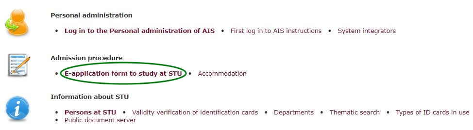
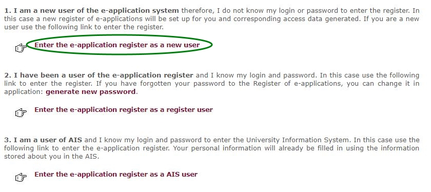
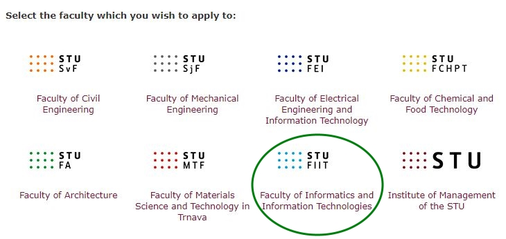
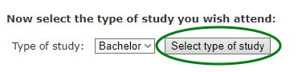
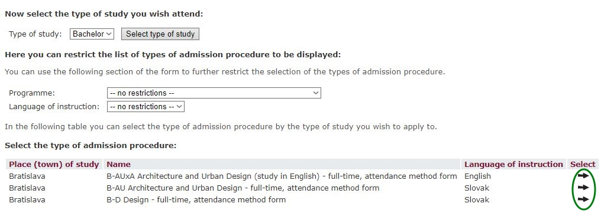
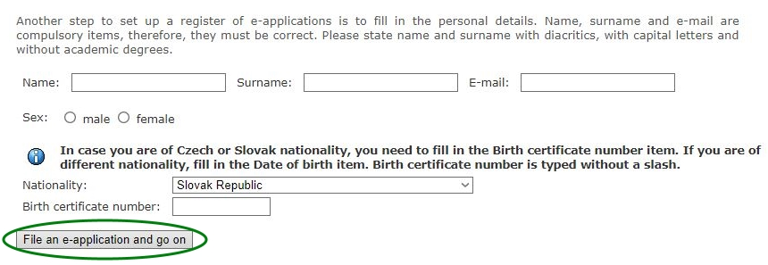

The application may be submitted according to the following instructions until 31 March 2018.
Curriculum vitae. We recommend using the template.
A hand-signed declaration that your health condition allows you to study at a university. Students with a disability have to attach a confirmation from a doctor.
Confirmation (copy) of paying payment for the material provision of the admission process, only in case the payment was paid using postal order.
Verified copies of certificates from various competitions, if the applicant wants to earn bonus points.
The applicant has to enter their first name and last name in the "Message for the Recipient."
Print the application, sign it, and send it along with the necessary attachments to the address:
FIIT STU v Bratislave
Ilkovičova 2
842 16 Bratislava 4
The application may be filled electronically in the academic information system AIS according to the following instructions.
In the main menu of the AIS, select the option E-application form to study at STU in the Admission procedure section.
To create an account in the AIS, select the option Enter the e-application register as a new user. If you already have an account, sign in using the option Enter the e-application register as a register user. If you already study at the Slovak University of Technology and have an access into AIS, select the option Enter the e-application register as a AIS user.
Select the Faculty of informatics and information technologies.
Select the type of the study for which you would like to apply.
Select the study program for which you would like to apply. Continue by clicking on the arrow in the "select" column at your chosen study program.
Enter the required personal information and submit the application by clicking the File an e-application and go on button.
